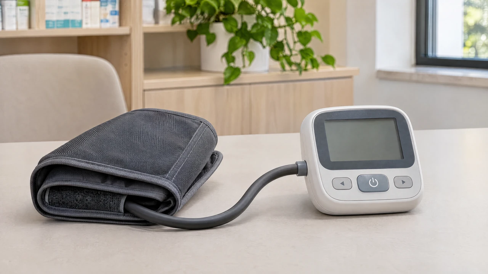
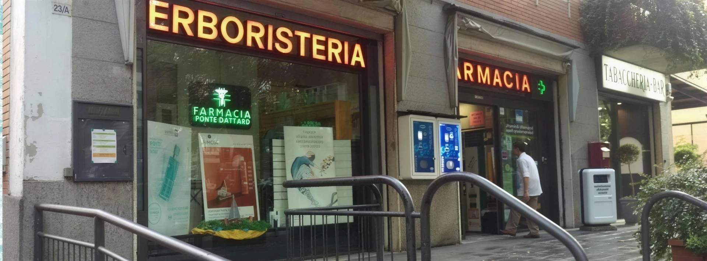

Elettrocardiogramma
ECGRegistra l’attività elettrica del cuore con elettrodi applicati sulla pelle.
Prima di accedere
Per modalità di accesso, disponibilità, preparazione e tariffe, contatta la farmacia.
Farmacia Ponte Dattaro Parma, Montanara
Per chi abita, lavora o passa da Montanara.
A Parma, dal 1966.
Scorri. Entra con noi.
01 / I servizi in farmacia
ECG, pelle e Holter. Scegli il servizio e contatta la farmacia.
Fotografie illustrative IA
Registra l’attività elettrica del cuore con elettrodi applicati sulla pelle.
Per modalità di accesso, disponibilità, preparazione e tariffe, contatta la farmacia.
In farmacia puoi chiedere una valutazione a distanza per un problema della pelle.
Per modalità di accesso, disponibilità, preparazione e tariffe, contatta la farmacia.
Misura la pressione arteriosa a intervalli durante le normali attività quotidiane.
Per modalità di accesso, disponibilità, preparazione e tariffe, contatta la farmacia.
Registra il ritmo del cuore mentre svolgi le attività di ogni giorno.
Per modalità di accesso, disponibilità, preparazione e tariffe, contatta la farmacia.
Hai una domanda o non sai da dove iniziare?
Parliamone insiemeLa nostra storia
Sessant’anni, una presenza nel quartiere. Dall’apertura alla farmacia di oggi, in Strada Montanara.
1966
La storia della Farmacia Ponte Dattaro comincia nel 1966.

1988
Dal 1988, la farmacia è in Strada Montanara, 23/b, a Parma.
1999
Dal marzo 1999 la farmacia è guidata dal dott. Enrico Bruschi.

2026
1966–2026. Oggi, consigli, prodotti e quattro servizi: ECG, teledermatologia, Holter pressorio e Holter cardiaco.
Esplora i serviziLa vita in farmacia
01 / 04
Fotografie illustrative IA
Visioni illustrative IA. Gli oggetti illustrativi non sono fotografie d’archivio.
Un consiglio su misura
Prima di passare
Una domanda pratica? Qui trovi da dove cominciare.
Parla con la farmaciaChiama o scrivi alla farmacia per conoscere disponibilità, modalità di accesso, eventuale preparazione e tariffe del servizio che ti interessa.
Chiama 0521 964011In Strada Montanara, 23/b, 43124 Parma (PR), nel quartiere Montanara. La sede attuale è qui dal 1988.
Indirizzo e indicazioniContatta direttamente la farmacia per verificare gli orari prima di passare.
Chiedi gli orariPuoi chiamare, scrivere su WhatsApp o inviare un’email. I collegamenti aprono i canali della farmacia; questa pagina non conferma prenotazioni.
Apri WhatsApp
03 / Ci trovi qui
Contattaci per gli orari aggiornati e la disponibilità dei servizi.